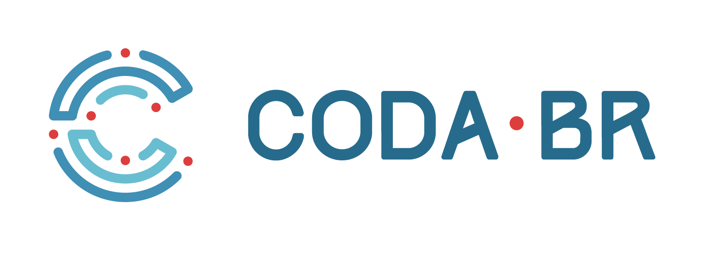

Como construir transparência editorial em equipes de jornalismo de dados
Slides at https://github.com/JAStark/Coda-Br_Workshop2017Slides
Jennifer A. Stark, Ph.D.
Why Make our work transparent??
•
•
•
Encourage better documentation and code commenting (good for future you and colleagues)
Build trust with readers, be accountable
Educational
Catalyse new projects
Standardise transparency structure
Easy to pick up an unfamilar project
- Us starting a new project
- Us reading a colleagues' project (eg code review)
- Our readers exploring our work
Less cognitive load for everyone if the format/layout is predictable